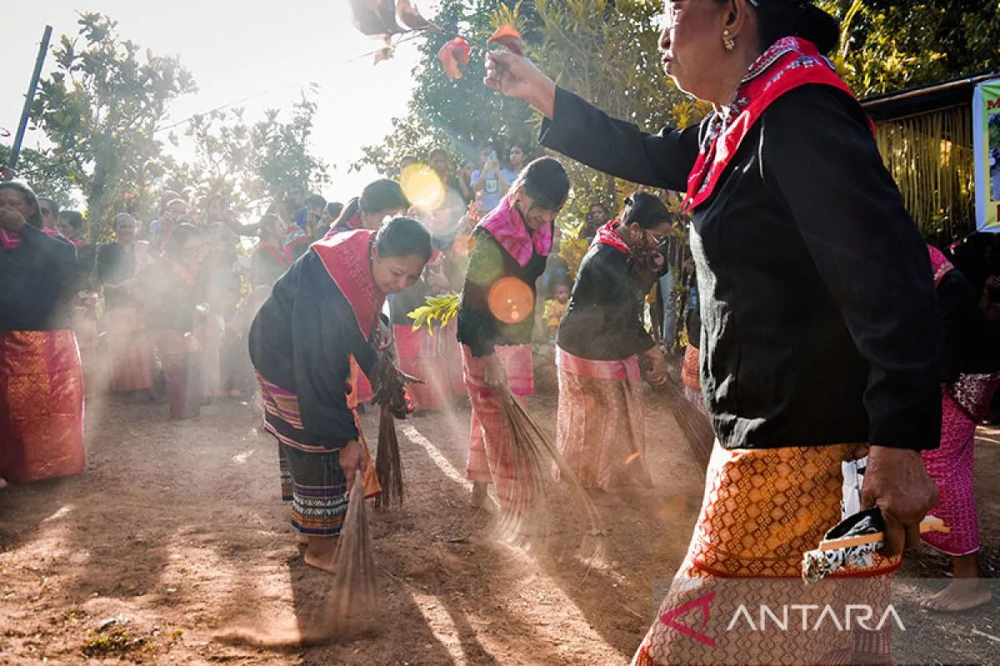
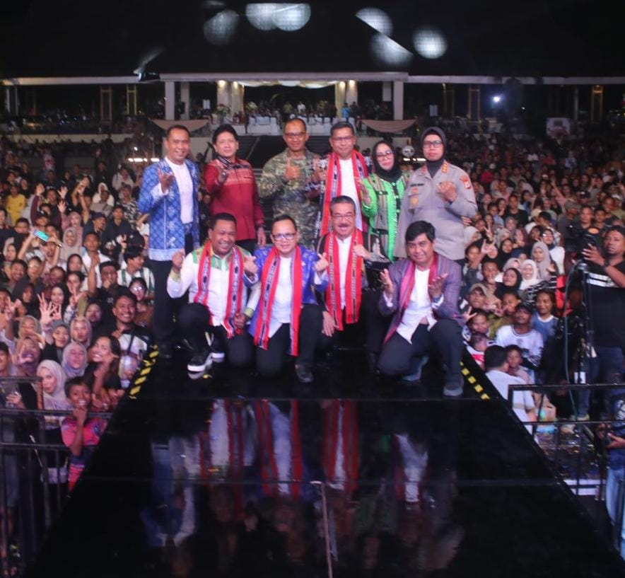
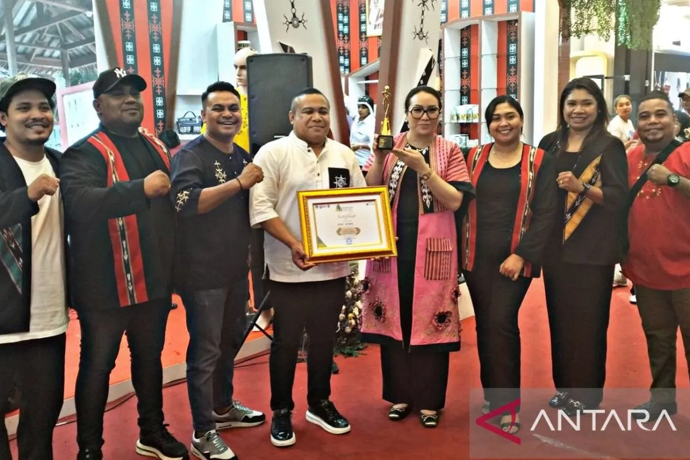

Tradisi Cuci Negeri Soya di Ambon dan makna kain gandong
Dua kelompok warga berdiri saling berhadap-hadapan dengan iringan rentak perkusi tifa dan gong di Negeri Soya, Kota Ambon.
Baca selengkapnya →

Festival Benteng Victoria Warnai Peringatan Hari Kebudayaan Nasional di Ambon
Festival ini menjadi simbol identitas masyarakat Maluku sekaligus bentuk nyata dari pembangunan kebudayaan yang berkelanjutan.
Baca selengkapnya →

Ambon raih penampilan seni terbaik pada pameran kebudayaan
Kota Ambon Maluku meraih penghargaan penampilan seni terbaik pada pameran kebudayaan Indonesia yang diselenggarakan oleh Asosiasi pemerintah kota seluruh Indonesia (Apeksi) di Kota Surabaya.
Baca selengkapnya →